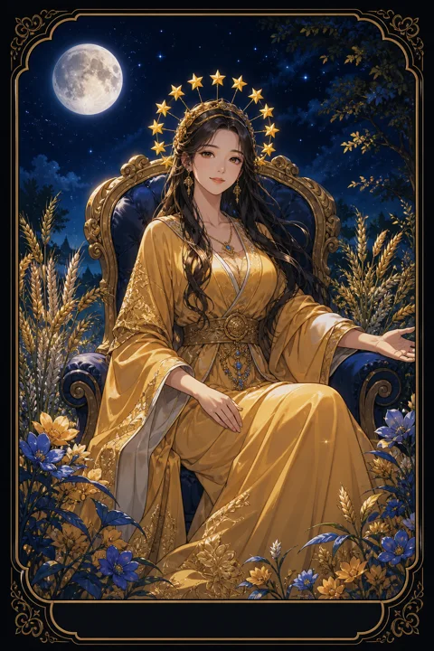

이 게시물은 쿠팡 파트너스 활동의 일환으로, 이에 따른 일정액의 수수료를 제공받습니다.


III 여황제 카드 — 풍요로운 결실과 따뜻한 돌봄
여황제 카드 한눈에 보기
여황제 카드 상징 읽기

동네보살의 카드 그림은 전통 라이더–웨이트 덱의 뜻을 새 그림으로 옮긴 것입니다. 아래 상징 설명은 전통 덱의 그림을 기준으로 합니다.
여황제는 푹신한 방석을 깐 왕좌에 편안히 기대어 앉아 있습니다. 긴장하거나 싸울 필요 없이 이미 충분히 가진 사람의 여유를 보여 줍니다.
발 앞으로 펼쳐진 누렇게 익은 밀밭은 노력의 결실과 수확을 상징합니다. 씨를 뿌리고 기다린 시간이 풍성한 곡식으로 돌아왔다는 뜻입니다.
머리에 쓴 열두 개의 별 왕관은 한 해의 열두 달, 곧 자연의 순환 전체를 다스리는 힘을 나타냅니다. 곁에 놓인 하트 모양 방패에는 사랑과 여성성을 뜻하는 금성 기호가 새겨져 있습니다. 뒤편 숲과 흐르는 시냇물은 생명이 끊임없이 자라나고 흘러 순환하는 자연 그대로의 풍요로움을 보여 줍니다.
여황제의 옷에 가득 그려진 석류 무늬는 많은 씨앗, 곧 번성과 생명력을 뜻합니다. 목에 두른 진주 목걸이는 오랜 시간 품어 만들어진 아름다움입니다. 오른손에 든 홀은 자연을 억누르는 권력이 아니라 자라나는 것을 지켜보는 다스림을 상징합니다.
여황제 카드 정방향 뜻
정방향 여황제는 정성 들여 가꿔 온 것이 무르익어 눈에 보이는 결과로 돌아오는 시기를 뜻합니다. 인간관계, 일, 취미, 가정 어디에서든 돌본 만큼 자라나는 흐름이 강합니다.
이 카드의 힘은 억지로 밀어붙이는 데서 나오지 않습니다. 따뜻한 관심과 꾸준한 보살핌, 그리고 기다려 주는 여유가 결실을 만듭니다. 누군가를 키우고 가르치는 일, 아름다운 것을 만드는 창작 활동에서 특히 빛이 납니다.
몸과 감각을 소중히 여기라는 메시지도 담겨 있습니다. 좋은 음식, 자연 속 산책, 편안한 공간처럼 오감을 채우는 경험이 마음의 여유를 되찾아 줍니다. 스스로를 먼저 넉넉하게 대할 때 다른 사람에게 나눌 힘도 생깁니다. 서두르지 않아도 제철이 되면 곡식은 익습니다. 결과를 재촉하기보다 매일 물을 주는 손길을 이어 가는 것이 지금 가장 좋은 선택입니다.
여황제 카드 역방향 뜻
역방향 여황제는 풍요의 에너지가 한쪽으로 치우친 모습입니다. 상대를 아끼는 마음이 지나쳐 간섭이 되거나, 모든 것을 대신 해 주다 보니 상대가 스스로 설 기회를 잃는 경우가 있습니다.
반대로 편안함에 너무 익숙해져 해야 할 일을 미루고 성장이 멈춘 상태를 가리키기도 합니다. 남을 돌보느라 정작 자신은 지쳐 메말라 있을 가능성도 살펴야 합니다.
이 카드는 사랑이 부족하다는 뜻이 아니라 사랑의 방향을 다듬으라는 신호입니다. 돕고 싶은 마음이 들 때 상대가 정말 원하는 도움인지 한 번 물어보세요. 그리고 스스로를 위한 휴식과 창작의 시간을 따로 떼어 두면 멈췄던 밭에 다시 싹이 틉니다. 창작하고 싶은 마음이 막혔거나 몸이 무겁게 느껴진다면 억지로 성과를 내려 하기보다 생활의 리듬부터 회복하는 것이 먼저입니다. 잘 먹고 잘 쉬는 일도 이 카드에게는 중요한 해법입니다.
연애에서 여황제 카드
솔로라면 매력이 자연스럽게 무르익어 사람들이 편안하게 다가오는 시기입니다. 꾸미려 애쓰기보다 스스로를 아끼고 즐기는 모습이 인연을 끌어당깁니다. 요리 모임이나 자연을 즐기는 활동처럼 따뜻한 분위기의 자리에서 좋은 만남이 생길 수 있습니다.
연애 중이라면 서로를 돌보는 마음이 깊어지고 관계가 한층 안정됩니다. 함께 사는 이야기, 결혼, 가족 계획처럼 다음 단계에 대한 대화가 오갈 수 있는 흐름입니다. 다만 한 사람만 계속 챙기고 다른 사람은 받기만 하는 구조가 굳어지지 않도록 살펴야 합니다. 주고받는 애정의 균형이 맞을 때 이 카드의 풍요가 온전히 피어납니다. 솔로라면 자신을 가꾸는 시간이 곧 매력을 키우는 시간이니 외모뿐 아니라 마음의 여유를 돌보는 데도 공을 들여 보세요. 연애 중인 커플에게는 함께 요리하거나 작은 식물을 키우는 일처럼 무언가를 함께 길러 내는 경험이 애정을 더 깊게 만들어 줍니다.
재회·속마음 질문에서 여황제 카드
재회를 묻는 자리에서 여황제가 나오면 상대가 함께했던 시간의 따뜻함과 편안함을 그리워하고 있을 가능성이 있습니다. 당신이 베풀었던 보살핌을 뒤늦게 고맙게 느끼는 마음도 읽힙니다. 다만 예전처럼 모든 것을 맞춰 주는 방식으로 돌아가면 같은 문제가 반복될 수 있습니다. 여유 있고 단단해진 모습을 보여 주는 것이 관계를 다시 자라게 합니다. 상대가 힘든 시기를 보내고 있다면 조건 없는 안부가 마음을 여는 계기가 될 수 있습니다. 하지만 상대를 다시 돌보는 역할에만 머물면 연인이 아니라 보호자가 되기 쉽습니다. 서로 기대고 기댈 수 있는 관계인지 차분히 가늠해 보는 것이 좋습니다.
일·금전에서 여황제 카드
일에서는 오래 공들여 온 프로젝트나 투자한 시간이 성과로 돌아오는 흐름입니다. 사람을 키우고 조직 분위기를 돌보는 역할에서 좋은 평가를 받기 쉽고, 디자인이나 요리, 교육처럼 감각과 정성이 필요한 분야와도 잘 맞습니다.
금전적으로는 넉넉함이 느껴지는 시기지만, 기분 좋은 만큼 씀씀이가 커질 수 있습니다. 수확한 것 가운데 일부는 다음 해의 씨앗으로 남겨 두는 태도가 필요합니다. 당장 크게 불리는 방법을 찾기보다 꾸준히 가꾸고 기다리는 방식이 이 카드의 흐름과 맞습니다. 팀원이나 후배를 챙긴 일이 뜻밖의 협력으로 돌아올 수 있으니 사람에게 들이는 시간을 아끼지 마세요. 손으로 만드는 일, 공간을 꾸미는 일, 사람을 편안하게 하는 서비스 분야라면 특히 반응이 좋습니다.
여황제 카드는 예일까 아니오일까
씨앗이 자라 열매를 맺는 카드라서 공들여 온 일의 결과를 묻는다면 긍정으로 봅니다. 역방향이라면 돌봄이 지나치거나 편안함에 기대어 손을 놓은 상태라, 노력을 다시 기울일 때 좋은 답이 온다는 조건이 붙습니다.
자주 묻는 질문
여황제 카드 역방향은 나쁜 뜻인가요?
역방향 여황제는 풍요의 에너지가 한쪽으로 치우친 모습입니다. 상대를 아끼는 마음이 지나쳐 간섭이 되거나, 모든 것을 대신 해 주다 보니 상대가 스스로 설 기회를 잃는 경우가 있습니다.
여황제 카드가 연애 질문에 나오면요?
솔로라면 매력이 자연스럽게 무르익어 사람들이 편안하게 다가오는 시기입니다. 꾸미려 애쓰기보다 스스로를 아끼고 즐기는 모습이 인연을 끌어당깁니다. 요리 모임이나 자연을 즐기는 활동처럼 따뜻한 분위기의 자리에서 좋은 만남이 생길 수 있습니다.
타로 카드는 어떻게 뽑나요?
타로 카드 페이지에서 78장을 섞으면 그중 22장이 펼쳐집니다. 마음이 가는 세 장을 고르면 과거·현재·미래 자리에 놓이고, 한 장씩 뒤집어 자리와 방향에 맞는 풀이를 읽습니다. 정방향과 역방향은 섞는 순간 정해집니다.